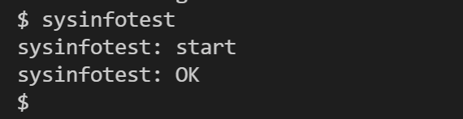
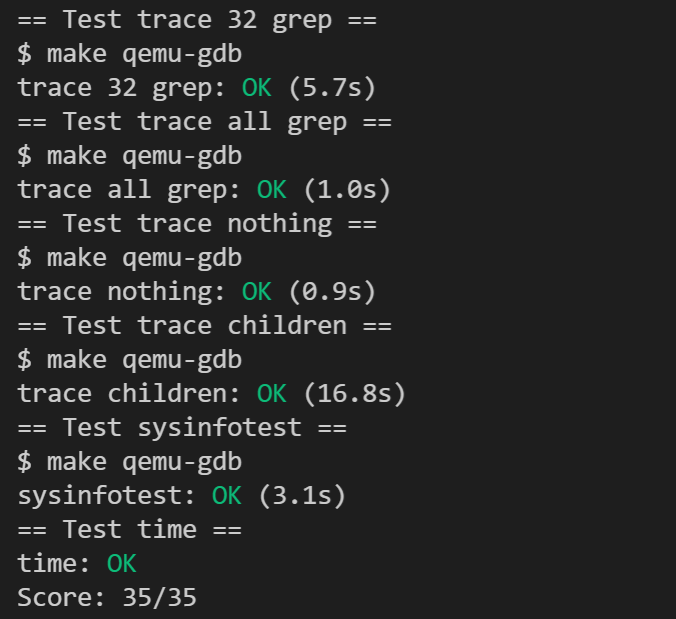

实验概述¶
温（守）馨（住）提（红）示（线）
本课程实验已引入代码自动查重系统，请同学们保持学术诚信！
提示
本节实验与理论课的 “导论与操作系统结构” 和 “进程与线程：进程” 这两章课程内容相关，在开始实验前，请复习这两章课程内容。
1. 实验目的¶
本节实验的目的是对操作系统的系统调用模块进行修改，尽可能在真正修改操作系统之前，先对操作系统有一定的了解。
- 了解xv6系统调用的工作原理。
- 熟悉xv6通过系统调用给用户程序提供服务的机制。
2. 实验学时¶
本实验为4学时。
3. 实验内容及要求¶
实验要求可以参考MIT XV6 lab2提供的官方说明：Lab: System calls(mit.edu)， 但请以指导书为准，否则可能无法通过测试！
3.1 切换分支¶
请先同步上游远程仓库，并注意切换到syscall分支进行试验
本次实验基于syscall分支，请同学们注意切换。
Step 1. 首先，保存实验一的代码，请参考实验实用工具的3.3.1 使用命令行完成操作或者3.3.2 使用VS Code内建的图形化界面完成操作这两小节，完成commit操作。或者， 如果你希望直接放弃掉上一次commit后的所有更改 ，那么你也可以使用-f选项强制切换分支，例如git checkout -f syscall。
Step 2. 切换的方法可以参考实验 -> 实验实用工具 -> 3.1同步上游仓库 ~ 3.3.3 合并冲突更改。
本次实验需要为xv6实现一些必要的系统调用和功能，在完成这些之后，你就可以正常使用trace程序和sysinfotest测试程序。具体来说，本实验有两部分：
3.2 任务一：系统调用信息打印¶
在该任务中，你需要在xv6加入具有跟踪功能的trace系统调用，它可以打印系统调用信息，来帮助你在之后的实验中进行debug。
具体要求：添加一个名为 trace 的系统调用。
3.2.1 系统调用接口定义¶
int trace(int mask)
- 参数
mask：每一位对应一个系统调用，位的比特值与系统调用编号相对应，指示是否需要追踪其对应的系统调用。
（1）如调用trace(1 << SYS_fork)，则代表只追踪系统调用fork，其中SYS_fork是在kernel/syscall.h中定义的fork系统调用的编号。
（2）如调用trace(0xffffffff)，则代表追踪所有系统调用。 - 返回值 ：正常执行返回0，异常返回-1。
- 功能 ：设置该程序的
mask。
（1）设置mask之后，内核每 处理完一次系统调用后 ，即系统调用返回前，若mask指示了该系统调用，则打印对应信息。
（2）打印格式：PID: sys_$name(arg0) -> return_value
其中$name为需要追踪的系统调用的名称；arg0为需要追踪的系统调用的第一个参数，return_value为需要追踪的系统调用的返回值，以十进制型打印。
3.2.2 运行结果¶
实验提供了一个trace（见 user/trace.c）用户级应用程序，该程序首先通过trace系统调用设置需要跟踪的系统调用，然后再启动另一个程序，打印出该程序执行指定系统调用的情况。
提示
大家不要修改 user/trace.c应用程序，它只是用于测试3.2.1 新增的trace系统调用。
在你添加完该系统调用之后，运行用户程序 trace运行正确的情况下，你可以看到以下输出：
[cs@localhost xv6-labs-2020]$ make qemu
/* 一大波输出 …… */
xv6 kernel is booting
hart 2 starting
hart 1 starting
init: starting sh
$
/* 例子1，手动输入:trace 32 grep hello README */
$ trace 32 grep hello README
3: sys_read(3) -> 1023
3: sys_read(3) -> 966
3: sys_read(3) -> 70
3: sys_read(3) -> 0
$
/* 例子2，手动输入:trace 2147483647 grep hello README */
$ trace 2147483647 grep hello README
4: sys_trace(2147483647) -> 0
4: sys_exec(12240) -> 3
4: sys_open(12240) -> 3
4: sys_read(3) -> 1023
4: sys_read(3) -> 966
4: sys_read(3) -> 70
4: sys_read(3) -> 0
4: sys_close(3) -> 0
$
/* 例子3，手动输入:grep hello README */
$ grep hello README
$
/* 例子4，手动输入:trace 2 usertests forkforkfork */
$ trace 2 usertests forkforkfork
usertests starting
test forkforkfork: 407: syscall fork -> 408
408: sys_fork(-1) -> 409
409: sys_fork(-1) -> 410
410: sys_fork(-1) -> 411
409: sys_fork(-1) -> 412
410: sys_fork(-1) -> 413
409: sys_fork(-1) -> 414
411: sys_fork(-1) -> 415
...
$
我们先不着急动手，先看看结果长什么样。
-
在 第一个例子 中，
trace 32 grep hello README，其中，trace表示我们希望执行用户态应用程序trace（见user/trace.c），后面则是trace应用程序附带的入参：32是"1 << SYS_read"，表示只追踪系统调用read；grep是trace应用程序中通过"exec"启动的另一个程序（见 user/grep. c）；hello README则是grep程序的入参；- 该命令的作用是使用grep程序查找README文件中匹配"hello"的行，并将其所使用到的read系统调用的信息打印出来，打印的格式为：
PID: sys_read(read系统调用的arg0) -> read系统调用的return_value。
-
在 第二个例子 中，trace也是启动了
grep程序，同时追踪所有的系统调用其中2147583647是31位bit全置一的十进制整型。可以看出，打的第一条信息就是系统调用trace，其第一个参数即命令行中输入2147583647。 -
在 第三个例子 中，启动了
grep程序，但是没有使用trace，所以什么trace都不会出现。 -
在 第四个例子 中，trace启动了
usertests程序中forkforkfork（见 user/usertests.c），追踪系统调用了fork，每次fork后代都会打印对的进程id。-
该例中的fork实际上并没有参数，方便起见，你可以直接打印用于传该参数的寄存器的值，它可能是任意值。
-
forkforkfork 会一直不停的fork子进程，直到进程数超过
NPROC，其定义见kernel/param.h。 -
usertests是实验提供的用于测试xv6的系统调用，详见user/usertests.c。
/* user/usertest.c */ //Tests xv6 system calls. usertests without arguments runs them all // and usertests <name> runs <name> test. The test runner creates for // each test a process and based on the exit status of the process, // the test runner reports "OK" or "FAILED". Some tests result in // kernel printing usertrap messages, which can be ignored if test // prints "OK". -
3.3 任务二：添加系统调用sysinfo¶
在该任务中，你需要加入一条新的系统调用，叫做sysinfo。该系统调用将收集xv6运行的一些信息。
sysinfo只需要一个参数，这个参数是结构体 sysinfo的指针， 这个结构体在kernel/sysinfo.h 可以找到。xv6内核的工作就是把这个结构体填上应有的数值。下面介绍结构体每个成员的含义
1 struct sysinfo {
2 uint64 freemem; // amount of free memory (bytes)
3 uint64 nproc; // number of process
4 uint64 freefd; // number of free file descriptor
5 };
freemem：当前剩余的内存 字节 数nproc： 状态为UNUSED 的进程个数freefd：当前进程可用文件描述符的数量，即 尚未使用 的文件描述符数量
实验提供了一个sysinfotest用户级应用程序（见user/sysinfotest.c），依次测试剩余的内存字节数、UNUSED的进程个数、未被使用的文件描述符数量。
完成任务后，你可以在xv6中运行sysinfotest程序，通过测试会显示如下内容：

3.4 测试¶
当完成上述的两个任务后，与Lab1一样，你也需要在在xv6-labs-2020目录下，新建time.txt文件，在该文件中写入你做完这个实验所花费的时间（估算一下就行，单位是小时），只需要写一个整数即可。
最后，在命令行输入 make grade 进行测试。如果通过测试，会显示如下内容：
